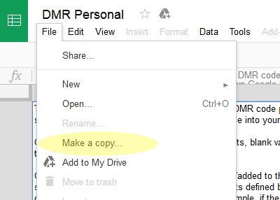
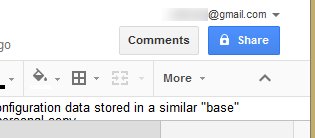
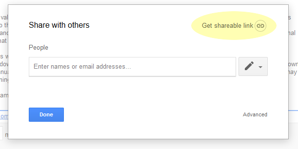
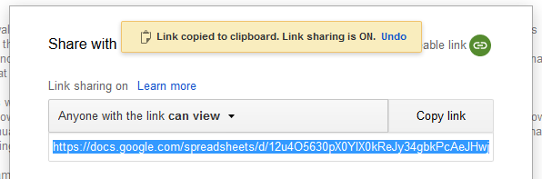

One of the key features of this tool is the ability to layer
personal customizations on top of a group's standard DMR radio
configuration. This makes it possible to have a ready to use
code plug file straight from the tool without having to use your
radio's programming software to set your radio ID, add extra
channels that you want, customize the radio settings, etc. every
time the group updates the base code plug.
To accomplish this, you will need to create a personal
configuration spreadsheet.
Requirements: You must have a Google account. If you
do not have one, you must create one to use the personalization
feature of this tool.
Steps:
- Sign in to http://drive.google.com/
- Open the personal template
- Make a copy of the template into your own personal Google Drive space 
- In your new personal copy, click the "Share" button in the upper right corner of the screen 
- Click "Get sharable link" 
- At this point, you should see a screen saying that link sharing is on.
Make sure that it is set so that anyone with the link can view
the document. Copy the link URL to your clipboard and then paste it into
the personal configuration field of the frequency plan tool form.

- Edit the contents of the spreadsheet whenever you wish
and provide the shareable link to the frequency plan tool
each time you generate a new code plug. Your personal
settings will be applied on top of the base settings in the
generated code plug file.